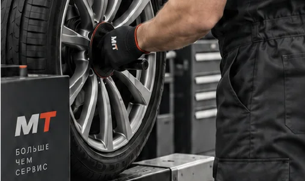
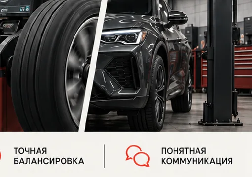
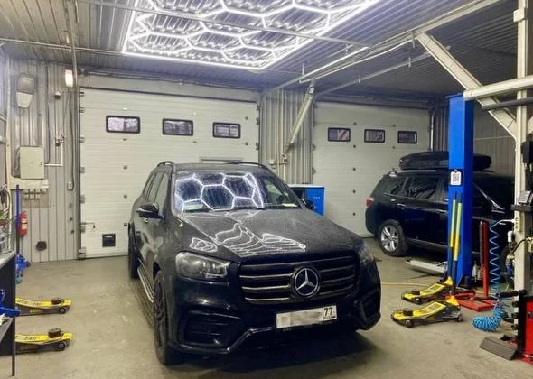

Сервис шиномонтажа требует короткого и понятного маршрута: человек должен быстро увидеть услуги, понять порядок записи и найти нужную информацию с телефона.
Структура
Сначала — маршрут.
Собрали услуги и детали по приоритету: от первого экрана к конкретному действию. Навигация не спорит с содержанием, а поддерживает его.

Услуги · ясная иерархия

Детали · ответы до обращения
Визуал
Чёрный, белый и сигнальный красный.
Крупная типографика помогает быстро понять услугу. Красный используется как точка действия, а не как декоративный шум.

Мобильная
То же направление на маленьком экране.
Сетка и кнопки собраны так, чтобы с телефона было легко выбрать услугу, открыть детали и перейти к записи.